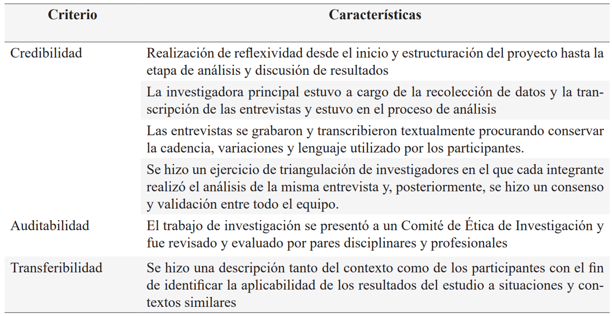
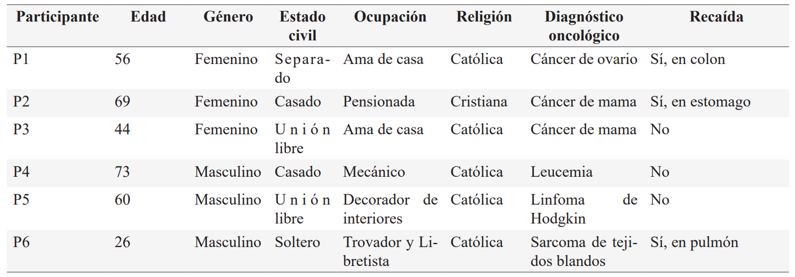

ISSN-PRINT 1794-9831 / E-ISSN 2322-7028
Vol. 19 Nº 3 / sep - dic, 2022 / Cúcuta, Colombia.
ISSN-PRINT 1794-9831 / E-ISSN 2322-7028
Vol. 19 Nº 3 / sep - dic, 2022 / Cúcuta, Colombia.
Resumen
Objetivo: Analizar la vivencia de la espiritualidad en el paciente con cáncer en tratamiento con quimioterapia ambulatoria. Materiales y métodos: Se realizó una investigación cualitativa con enfoque histórico hermenéutico. Participaron seis personas con diagnóstico de cáncer que se encontraban en tratamiento de quimioterapia ambulatoria en tres centros asistenciales de la ciudad de Medellín, Colombia entre julio de 2020 y julio de 2021. La información se recolectó a través de entrevistas semiestructuradas. El proceso de análisis se realizó utilizando técnicas de la teoría fundamentada de Strauss y Corbin, tales como: microanálisis, codificación abierta, codificación axial y comparación constante. Resultado: La forma como los pacientes con cáncer en tratamiento de quimioterapia ambulatoria viven la espiritualidad se representa a través de las siguientes categorías: “Emociones vividas durante el tratamiento como impulso para seguir adelante”, “Las redes de apoyo, una fuente de fortaleza y esperanza”, “El cáncer, una prueba divina entre las limitaciones y el aprendizaje”, “La empatía del personal de salud, un mecanismo para afrontar la enfermedad y generar bienestar” y “La espiritualidad, una fuerza que cambia la perspectiva de la enfermedad”. Conclusiones: Pese a la connotación negativa del diagnóstico de cáncer, la dimensión espiritual en el paciente con cáncer en tratamiento de quimioterapia ambulatoria contribuye a que la persona vea la enfermedad desde una perspectiva positiva, aumente la fe y la esperanza para continuar luchando, le dé un sentido de que todo ha valido la pena, permite ver más allá y proporciona tranquilidad para enfrentar las adversidades ocasionadas por el cáncer.
Palabras Claves: Emociones; Apoyo Social; Adaptación psicológica.
Abstract
Objective: To analyze the experience of spirituality in cancer patients undergoing treatment with ambulatory chemotherapy. Materials and methods: A qualitative research with a historical hermeneutic approach. Six people with a diagnosis of cancer who were undergoing outpatient chemotherapy treatment in three health care centers in the city of Medellin, Colombia between July 2020 and July 2021 participated. The information was collected through semi-structured interviews. The analysis process was carried out using Strauss and Corbin's grounded theory techniques: microanalysis, open coding, axial coding, and constant comparison. Results: The way cancer patients undergoing outpatient chemotherapy treatment experience spirituality is represented through the following categories: "Emotions experienced during treatment as an impetus to move forward", "Support networks, a source of strength and hope", "Cancer, a divine test between limitations and learning", "Empathy of health personnel, a mechanism to coping with the disease and generate well-being", and "Spirituality, a force that changes the perspective of the disease". Conclusions: Despite the negative connotation of the diagnosis of cancer, the spiritual dimension in the cancer patient undergoing outpatient chemotherapy treatment contributes to the person seeing the disease from a positive perspective, increases faith and hope to continue fighting, gives a sense that everything has been worthwhile, allows seeing beyond and provides peace of mind to face the adversities caused by cancer.
KeyWords: Emotions; Social support; Adaptation psychological.
Resumo
Objetivo: Analisar a experiência da espiritualidade em pacientes com câncer em quimioterapia ambulatorial. Materiais e Métodos: Realizou-se uma pesquisa qualitativa com uma abordagem histórico hermenéutico. Participaram seis pessoas diagnosticadas com câncer que estavam em tratamento quimioterápico ambulatorial em três centros de atendimento da cidade de Medellín, Colômbia, entre julho de 2020 e julho de 2021. As informações foram coletadas por meio de entrevistas semiestruturadas. O processo de análise foi realizado utilizando as técnicas de teoria fundamentada de Strauss e Corbin, tais como: microanálise, codificação aberta, codificação axial e comparação constante. Resultado: A forma como os pacientes oncológicos em tratamento quimioterápico ambulatorial vivenciam a espiritualidade é representada por meio das seguintes categorias: "Emoções experimentadas durante o tratamento como um ímpeto para seguir em frente", "Redes de apoio, fonte de força e esperança", "Câncer, teste divino entre limitações e aprendizagem", "A empatia do pessoal de saúde, um mecanismo para enfrentamento da doença e gerar bem-estar" e "A espiritualidade, uma força que muda a perspectiva da doença". Conclusões: Apesar da conotação negativa do diagnóstico de câncer, a dimensão espiritual em pacientes com câncer em tratamento quimioterápico ambulatorial ajuda a pessoa a ver a doença de uma perspectiva positiva, aumenta a fé e a esperança de continuar lutando, dá a sensação de que tudo valeu a pena, permite você enxergar além e traz tranquilidade para enfrentar as adversidades causadas pelo câncer.
Palavras-chave: Emoções, Apoio Social, Adaptação Psicológica
Autor de correspondencia*
1* Enfermero,
Doctor en Enfermería,
Docente titular, Facultad de Enfermería, Universidad Pontificia Bolivariana. Medellín, Colombia.
camilo.duque@upb.edu.co,
Enfermero,
Doctor en Enfermería,
Docente titular, Facultad de Enfermería, Universidad Pontificia Bolivariana. Medellín, Colombia.
camilo.duque@upb.edu.co,  0000-0003-3106-0471
0000-0003-3106-0471
2* Enfermero,
Doctor en Salud Pública,
Docente titular, Facultad de Enfermería,
Universidad Pontificia Bolivariana.
Medellín, Colombia.
felipe.tirado@upb.edu.co, 0000-0001-9010-1494
3* Enfermera,
Magister en Enfermería
Oncológica. Facultad de Enfermería,
Universidad Pontificia Bolivariana.
Medellín, Colombia.
fernanda_8927@hotmail.com, 0000-0001-7028-1504
Recibido: 2 junio 2022
Aprobado: 20 noviembre 2022
Para citar este artículo / To reference this article / Para citar este artigo: Duque-Ortiz C, Tirado-Otalvaro AF, Guarin-Cardiba LF. Vivencia de la espiritualidad en el paciente con cáncer en quimioterapia ambulatoria. 2023; 20(1):45-58. https://doi.org/10.22463/17949831.3360
© Universidad Francisco de Paula Santander.
Este es un artículo bajo la licencia CC-BY-NC-ND

Introducción
La espiritualidad es un concepto abstracto, continuo y dinámico que se expresa en el ser humano a través del espíritu y se piensa como un proceso que actúa entre la armonía y el bienestar (1,2). Se considera un fenómeno personal que se relaciona con la energía, las relaciones, las conexiones y los vínculos que establecen las personas con ellos mismos, con el ambiente, con los demás y con una fuerza o ser superior y que denota armonía, plenitud e integridad del individuo (3). Así mismo, la espiritualidad se considera un principio, una experiencia y una forma de ser que se expresa a través del cuerpo (4).
La espiritualidad también hace referencia a la interconexión entre lo esencial y lo sagrado que se da a través de la experiencia de vida. En este sentido, la espiritualidad se constituye en una dimensión única de la persona que se caracteriza por la relación con el yo, con el otro, con la naturaleza y con la vida. En otras palabras, es una fuerza que da sentido a la vida (3).
Batista y Rodríguez (5) exponen que la espiritualidad trae beneficios que influyen directamente sobre el cuerpo humano tales como reducción de la tensión muscular, de la frecuencia cardiaca y de la presión arterial; mientras que Jim et al. (4), plantean que contribuye al control del dolor y el sufrimiento y a la disminución significativa del estrés. Del mismo modo, la orientación y acompañamiento espiritual pueden aumentar el bienestar personal, ayudar en el proceso de rehabilitación y reducir el impacto de las situaciones estresantes a las que se enfrenta una persona cuando tiene un quebrando de salud (1).
La espiritualidad en las personas que padecen enfermedades como el cáncer se manifiesta de formas diferentes según la experiencia de cada sujeto y suele ser más evidente cuando perciben la enfermedad como una amenaza para su vida (6). Puchalski (7) describe que el diagnóstico del cáncer cambia para siempre la vida de los pacientes y los lleva a evaluar y formularse preguntas existenciales sobre el sentido de la vida, el sufrimiento y la muerte.
Tener en cuenta la dimensión espiritual del paciente con cáncer contribuye a brindar una atención integral, fomenta el bienestar mental y espiritual de la persona (4), ayuda a que el paciente vuelva a tener esperanzas de cumplir sus metas, objetivos y proyecto de vida; mejora la salud física y mental, disminuye el estrés y aporta herramientas para hacerle frente a la enfermedad (8). Las prácticas espirituales pueden generar un sentimiento de control que ayude a recuperar la estabilidad física emocional y mental (1,9).
Pham et al. (10) destacan la importancia de considerar la dimensión de espiritualidad como un aspecto relevante cuando se tiene que informar al paciente sobre el diagnóstico y el pronóstico de su enfermedad ya que aumenta la satisfacción con la atención en salud y reduce el riesgo de presentar sintomatología depresiva. La espiritualidad cumple un rol importante en el enfrentamiento al cáncer, en tanto permite nutrir la esperanza, re-significar la experiencia y buscar un sentido a la vida, la enfermedad y la muerte (1,11); de esta forma, la dimensión espiritual se convierte en una fuente de apoyo y esperanza después del diagnóstico y durante el tratamiento (12).
El mantenimiento del bienestar espiritual se convierte en un componente esencial del ser humano, especialmente en el contexto de enfermedades que amenazan la vida (11,13,14). El cuidado de las necesidades espirituales de los pacientes se correlaciona con mejores resultados psicológicos y espirituales y con la percepción de un cuidado menos agresivo al final de la vida (3,13); y aunque el personal de salud reconoce el cuidado espiritual como un aspecto apropiado de su función, los pacientes perciben que los brindan con poca frecuencia (10).
De acuerdo con lo anterior, se reconoce la importancia de abordar el fenómeno de la espiritualidad tal y como la experimentan los pacientes. En tal sentido, se realizó una investigación cualitativa con el objetivo de analizar la vivencia de la espiritualidad en el paciente con cáncer en tratamiento con quimioterapia ambulatoria. Como objetivos específicos se propusieron: describir de qué manera las emociones vividas y las relaciones establecidas con el personal de salud durante el tratamiento contribuyen a la espiritualidad, describir el significado de la espiritualidad para los pacientes sometidos a quimioterapia ambulatoria, reconocer las creencias de los pacientes y analizar el proceso de transición espiritual durante el tratamiento de quimioterapia ambulatoria.
Materiales y métodos
Se realizó una investigación cualitativa con enfoque histórico hermenéutico (15). Lo anterior permitió centrar el estudio hacia la búsqueda de significados, conocer la manera como los participantes piensan y actúan y la forma cómo el entorno influye en la vida de las personas cuando padecen cáncer y se encuentran en tratamiento de quimioterapia ambulatoria (16).
El estudio incluyó personas con diagnóstico de cáncer que se encontraban en tratamiento de quimioterapia ambulatoria en tres centros asistenciales privados de tercer nivel de la ciudad de Medellín, Colombia. Uno de los cuales es un centro exclusivo para la atención de pacientes oncológicos y los dos restantes son centros hospitalarios generales que ofrecen servicios de quimioterapia.
Se consideraron los siguientes criterios de inclusión: a) pacientes mayores de 18 años de cualquier género, b) que asistieron a tratamiento de quimioterapia ambulatoria, c) pacientes que llevaran más de cuatro meses en tratamiento de quimioterapia, y d) que vivieran en el área metropolitana de Medellín. El único criterio de exclusión fue tener limitaciones para el habla secundario al diagnóstico o al tratamiento.
Los participantes fueron contactados por la investigadora principal, dada su experiencia laboral en servicios oncológicos, por medio de un muestreo con propósito (17). El número de participantes se determinó por la saturación de datos de las categorías y por el alcance del estudio en cuanto al objetivo propuesto (18).
El periodo de recolección de información se efectuó entre julio de 2020 y julio de 2021. Se realizaron un total de seis entrevistas semiestructuradas (19) con una duración entre 35 y 90 minutos, las cuales fueron hechas por la investigadora principal quien fue previamente capacitada para este fin. Dos de las entrevistas fueron realizadas antes de la pandemia por COVID-19 de manera presencial en un lugar concertado por los entrevistados. Y las demás se realizaron a través de videollamadas por la plataforma Google Meet debido a las restricciones sanitarias producto del confinamiento. Durante las entrevistas se hizo observación de los gestos, actitudes, silencios y lenguaje no verbal; lo que se registró en un diario de campo.
Para las entrevistas virtuales, teniendo en cuenta que la mediación de la tecnología podría influir en la tranquilidad del participante, la cámara se mantuvo encendida en todo momento lo que permitió ver los gestos y expresiones de cada participante.
Para favorecer el discurso de los participantes y la expresión de sus pensamientos y sentimientos, se facilitó el rapport, creando tanto en las entrevistas presenciales como en las virtuales, un ambiente de confianza con el participante, estableciendo al inicio una conversación casual para romper el hielo y luego se continuó profundizando en la temática a tratar.
Las entrevistas se orientaron por medio de un guión de cuatro preguntas abiertas que incentivaran la conversación, el diálogo con el participante y la descripción de sus experiencias. Las preguntas detonadoras de las entrevistas fueron: ¿para usted qué es la espiritualidad?, ¿Qué ha significado para usted la espiritualidad en las diferentes etapas de su tratamiento?, ¿Cómo ha vivido la espiritualidad durante el tratamiento de quimioterapia ambulatoria?, ¿de qué manera la espiritualidad ha sido un recurso para afrontar los efectos producidos por la quimioterapia? A partir de las respuestas de los participantes se hicieron otras preguntas secundarias orientadas a profundizar en sus experiencias respecto al fenómeno de estudio, a las categorías y sub- categorías emergentes.
Las entrevistas fueron grabadas y transcritas textualmente. En los casos donde se utilizaron nombres de personas o instituciones se asignaron pseudónimos. La información registrada en el diario de campo sobre el lenguaje no verbal de los participantes se tuvo en cuenta en el proceso de análisis.
El proceso de análisis se realizó utilizando elementos de la teoría fundamentada propuesta por Strauss y Corbin (20), tales como: microanálisis, codificación abierta, codificación axial y comparación constante. El análisis fue realizado por todo el equipo de investigación, se hizo paralelamente a la recolección de datos y se apoyó con la realización de memos analíticos y teóricos (21,22).
Inicialmente se hizo una lectura completa de las entrevistas para verificar que la transcripción fue adecuada y para sensibilizarse de nuevo con cada una de ellas para luego realizar una precodificación, la cual consistió en un señalamiento de fragmentos de texto con comentarios o códigos al margen de la página. Posteriormente, en una matriz en Excel®, se consolidaron las unidades de análisis (UA) correspondientes a fragmentos de texto con significado, a los cuales se les asignó un código substantivo o In Vivo que lo representara. En adición, se indicó el código de la entrevista de donde se extrajo y se contó con una casilla para realizar observaciones que permitieran hacer un análisis denso y profundo de cada UA. Al final de este proceso se obtuvo un total de 441 códigos.
Los códigos obtenidos se agruparon según sus relaciones y similitudes bajo conceptos globales lo que permitió la creación de subcategorías y categorías. A través de la ayuda de memos analíticos y diagramas se establecieron relaciones entre los diferentes niveles de la estructura categorial. A partir de dicha estructura, se elaboró la descripción teórica de los hallazgos del estudio.
Esta investigación tuvo aprobación del Comité de Ética de investigación en Salud de la Universidad Pontificia Bolivariana (acta número 22 de 2019). Se cumplió con los requisitos exigidos en la Resolución No 008430 de 1993 expedida por el Ministerio de Salud de Colombia, en relación con los estudios clasificados como “Investigación con riesgo mínimo”. Se solicitó consentimiento informado y se protegieron en todo momento los principios éticos fundamentales de beneficencia, no maleficencia, respeto y justicia. Los criterios de rigor que se tuvieron en cuenta para el desarrollo del estudio fueron el de credibilidad, auditabilidad y transferibilidad, estos se describen en la Tabla 1 (23).
Tabla 1. Criterios de rigor del estudio
Fuente. Proceso reflexivo sobre el rigor metodológico a partir de los criterios de Morse (23).
Resultados
Los participantes fueron tres hombres y tres mujeres con una edad media de 54 años. Dos eran casados, dos en unión libre, uno separado y la restante era soltera.
En cuanto a la religión que profesaban, cinco participantes eran católicos y el restante era cristiano. Los diagnósticos oncológicos de los participantes y otras características clínicas y demográficas se presentan en la tabla 2.
Tabla 2. Características de los participantes.
Fuente: Base de datos construida a partir de las entrevistas realizadas.
A partir del análisis cualitativo de las entrevistas se identificó que la forma como los pacientes con cáncer en tratamiento de quimioterapia ambulatoria viven la espiritualidad se representa a través de las siguientes categorías: “Emociones vividas durante el tratamiento como impulso para seguir adelante”, “Las redes de apoyo, una fuente de fortaleza y esperanza”, “El cáncer, una prueba divina entre las limitaciones y el aprendizaje”, “La empatía del personal de salud, un mecanismo para afrontar la enfermedad y generar bienestar” y “La espiritualidad, una fuerza que cambia la perspectiva de la enfermedad”. En la figura 1 se presenta un análisis de las relaciones establecidas a partir de los hallazgos del estudio.
Figura 1. Categorías que representan la espiritualidad de las personas con cáncer en tratamiento con quimioterapia ambulatoria.
Fuente: Estructura categorial derivada del proceso de codificación
Emociones vividas durante el tratamiento como impulso para seguir adelante
Los participantes reconocen que la experiencia de padecer cáncer está marcada por la percepción de sentimientos que varían de acuerdo con los momentos de la enfermedad y las etapas por las que atraviesan. Los sentimientos previos al diagnóstico del cáncer reflejan tranquilidad e indiferencia pues, al no tener ninguna dolencia, no hay algo que los perturbe o afecte. Así mismo, no tienen afán con su vida y sus prioridades recaen sobre las personas cercanas y familiares como se refleja en el siguiente testimonio: “Primero uno como está tan aliviado, usted es vaya y venga” Mujer de 56 años con cáncer de ovario.
Una vez se diagnostica la enfermedad, los participantes experimentan sentimientos de tristeza, rabia, incertidumbre y angustia. Dichos sentimientos se asocian con la preocupación por conseguir el sustento de sus hijos, el temor a la muerte, el desconsuelo por no poder trabajar y las implicaciones de dichas situaciones sobre las relacionales laborales, familiares y sociales. Los participantes lo describen de la siguiente manera: “El primer cáncer que me descubrieron fue muy triste, porque que le digan a usted de una, eso fue algo muy impactante, ahí el dolor fue con las niñas, después… eso fue lo que más me desmoronó a mí”. Mujer de 56 años con cáncer de ovario.
Los sentimientos que perciben durante el tratamiento se asocian con los cambios físicos y funcionales que se derivan de este, como: el dolor, la pérdida de pelo, el cansancio y el agotamiento. De igual manera, sienten incomodidad al tener que depender de otros y disconfort por los procedimientos y efectos de la quimioterapia. Al respecto, los participantes refieren que aguantan y disimulan el dolor para no producir sufrimiento a sus familiares. Lo anterior, desencadena en ellos sentimientos adicionales de desconsuelo, derrota y vulnerabilidad pues deben dejar actividades que solían hacer y sufrir en silencio. Esto se refleja en el relato del siguiente participante: “Hay días que te levantas con ganas de tirar la toalla, yo siento que es la misma quimio, son esos días que lo maluquean a uno, la paso triste, malgeniado y aburrido”. Hombre de 26 años con sarcoma de tejidos blandos.
Durante el tratamiento, a pesar del tipo de sentimientos que experimentaron los participantes, aumentaron las ganas y la fortaleza de luchar por la vida, de salir adelante, de resistir y mantenerse en pie. Esto favoreció la expresión de su espiritualidad a través del desarrollo de una visión positiva, como una forma de expresión de sus vivencias, frente a la situación a la que se enfrentaban, como una manera de no dejarse derrotar por la enfermedad y de aferrarse a razones importantes para vivir tales como la familia y los proyectos de vida que estaban pendientes por cumplir. Así lo describen los siguientes participantes: “… llega algo por dentro que te da ese impulso, que dice que sales adelante, Y esas niñas son las que me empujan a mí” Mujer de 56 años con cáncer de ovario.
“… al sexto día, después de la quimioterapia, eso se le quita a uno y ya me vuelvo y me paro con ganas y me da alegría poder comer y me da alegría poder hacer otras cosas, es más que todo esas ganas de poder estar conmigo, con mi hermano, con todos ellos…” Hombre de 26 años con sarcoma de tejidos blandos.
En las recaídas, en algunos casos la noticia y el diagnóstico no produce tanto impacto como la primera vez, pues ya se tiene una experiencia previa con la situación y aún se conserva el apoyo y el impulso por salir adelante como se observa en el siguiente testimonio:
“…
y ahora otra vez volver, eso fue el año pasado, que me
dijeran que tenía cáncer no fue tan doloroso como la
primera vez, porque yo ya veía que eso resultaba por
otro lado… yo decía… listo, yo quedé curada, quedé
muy bien, pero he tenido familia con cáncer y entonces
eso les había repetido”
Mujer de 56 años con cáncer
de ovario.
Las redes de apoyo, una fuente de fortaleza y esperanza
Los participantes destacan lo importante que ha sido para ellos contar con el apoyo de sus hijos, de la pareja, de sus amigos más cercanos y compañeros de trabajo. En ellos encuentran la fortaleza, el sostén y la esperanza para asumir de una forma más positiva la enfermedad. La familia se reconoce como un círculo de amor que da apoyo y ayuda durante las dificultades y procesos que se derivan de la evolución del cáncer. Así mismo, se reconoce como una fuente de fortaleza espiritual que ayuda a afrontar los desafíos que impone la enfermedad. Esto se refleja en el siguiente testimonio:
“… uno está tan cobijado de amor en mi casa… yo tengo una familia que son como 20 y créeme que, si los 20 pudieran ir a las quimioterapias, todos irían conmigo”
Hombre de 26 años con sarcoma de tejidos blandos.
Los participantes también se sienten agradecidos, acompañados y motivados cuando los compañeros de trabajo y amigos se preocupan por ellos, están pendientes de su familia y de su proceso de enfermedad. La oración es una forma como las personas manifiestan su intereses y acompañamiento desde la distancia, pues en ella encuentran una herramienta para combatir la soledad y para sentirse acompañados. Una participante lo describe de la siguiente manera:
”… he tenido mucho apoyo tanto de mi familia, como de mis compañeras de trabajo, como de los vecinos, de todo mundo; todo mundo me dice… la tengo en mis oraciones, no me han dejado sola… yo creo que esa ha sido mi mayor fuerza”
Mujer de 56 años con cáncer de ovario.
En contraste con lo anterior, hay algunos casos donde la persona enferma se reserva el diagnóstico para sí misma o para un grupo limitado de personas y no comparte la noticia con toda la familia con el fin de centrar sus redes de apoyo en el grupo familiar más proximal y de esta manera evitar que el resto de la familia sienta pena y sufrimiento por su situación de enfermedad. Esto se observa en el siguiente relato:
“… yo no le cuento a nadie, tengo un primo hermano que es ginecólogo, tengo dos primas médicas también, en mi familia hay como diez médicos y yo a ninguno les cuento nada, ni a mi papá, ni a mis hermanas, ni a mis hermanos, ni a mis sobrinas las médicas, la única que sabe es mi señora, la mujer con la que vivo… por no preocuparlos; porque es que tuve una hermana que también sufrió de este mismo problema y le contó a toda la familia y toda la familia preocupada llorando. Yo no quiero que esa gente esté mal”.
Hombre de 60 años con linfoma de Hodgkin.
El cáncer, una prueba divina entre las limitaciones y el aprendizaje
Los participantes refieren que ven la enfermedad como una prueba divina en la que se enfrentan a múltiples limitaciones y dificultades que, a su vez, se constituyen en una oportunidad de cambio y de reflexión que le da un sentido diferente a la vida y que conlleva a aprendizajes significativos.
Una de las principales dificultades a las que se enfrentaron los participantes es a la pérdida de la capacidad para realizar actividades cotidianas, deportivas y laborales. En este sentido, el depender de otras personas para salir de la casa, para realizar tareas que usualmente hacían y asistir a lugares que solían frecuentar se constituye en un desafío, como se observa en el siguiente testimonio:
“…si voy a una parte… ya uno no puede ir solo. Si me voy para una IPS (Instituciones Prestadoras de Servicios) tiene que ser acompañada […] Yo voy a misa cuando siento que no hay mucha gente, porque como les digo… yo voy a misa, entonces el tumulto me pone mal, el calor, me voy como sofocando y me voy maluquiando, me voy desmayando”
Mujer de 56 años con cáncer de ovario.
En cuanto a los logros y aprendizajes significativos se encuentran el haber superado las fases del tratamiento del cáncer, aprender a controlar el dolor y ser más positivos en la vida y frente la enfermedad.
Al superar las distintas fases del tratamiento, los participantes perciben que su pronóstico de vida es mayor y mejoran las expectativas que tenían al inicio. Uno de los aspectos que contribuye a superarlas es el control del dolor que se deriva de la enfermedad en sí misma y del tratamiento que reciben. Para esto, el aceptar el cáncer hasta el punto de imaginarlo como un amigo se convierte en una estrategia que favorece su control y manejo.
Así mismo, se reconoce que el tránsito por la enfermedad contribuye a cambiar la forma de ser de la persona. Dicho cambio se caracteriza por ver la vida y el cáncer desde una perspectiva positiva, ser más humildes, no guardar rencor, valorar más la vida, no juzgar a los demás, aceptarse incondicionalmente a sí mismos y fortalecer el alma y el espíritu. Esto se observa en el relato de una de las participantes:
“… tiene que pasar uno por esas cosas para uno pensar, para uno saber todo lo que uno ha dejado de hacer y tener que llegar a una enfermedad de estas, para uno poder pensar cuánto vale uno, cuánto vale la vida, cuánto vale el ser que tiene uno al lado, de valorar las cosas por insignificantes que sean.”
Mujer de 56 años con cáncer de ovario.
La empatía del personal de salud, un mecanismo para afrontar la enfermedad y generar bienestar.
Las muestras de empatía por parte del personal de salud se reconocen como valiosas, ayudan a afrontar el proceso de enfermedad y tratamiento y brindan una sensación de bienestar. Así mismo, se entienden como fuente de espiritualidad, pues contribuyen a sentir gratitud, motivación, reconocimiento y confianza en sí mismos. Los participantes percibieron que el personal de salud era empático cuando mostraron interés, preocupación, les dieron un cuidado personalizado, los llamaron por su nombre y cuando el trato fue cálido, alegre, oportuno y pertinente para dar solución a sus necesidades tanto físicas como emocionales. Esto se refleja en el siguiente testimonio:
“Tratándolo a uno bien, diciéndole que eso no le va a doler o que si le va a doler, le va a doler un ratico no más y le dan como mucha moral, como para que uno no se decaiga, lo paran a uno”
Hombre de 73 años con Leucemia.
Por otro lado, los participantes también manifiestan que, cuando la atención del personal se hizo con falta de calidez, afecto y armonía, llegan a percibir que el personal que los atiende no tiene vocación y lo hacen como parte de una función que están obligados a cumplir, a diferencia de otros profesionales de los que reciben una atención más cercana, tal como lo relata el siguiente participante:
“… había otra jefa toda mala clase y yo ese tercer ciclo pasé maluco, maluco, maluco y al cuarto ciclo volví y ya estaba otra jefa y ya fue mejor”
Hombre de 26 años con sarcoma de tejidos blandos.
La espiritualidad, una fuerza que cambia la perspectiva de la enfermedad.
En el proceso de tránsito por la enfermedad, los participantes resaltan la importancia de la espiritualidad como un camino para el afrontamiento, la lucha, el aguante y la perseverancia en todas las etapas por las que atraviesan, además, consideran que genera una actitud positiva que ayuda a que se sientan mejor. Este bienestar se refleja en la disminución de la ansiedad, el enojo y el malestar, aumenta la esperanza, el optimismo y la capacidad de disfrutar y encontrarle un propósito a la vida. Los participantes reconocen la espiritualidad como la energía con que se vive la vida, el tener el alma tranquila y la fuerza motivadora que los ayuda a salir adelante y no los deja desfallecer, los ayuda a encontrar la paz interior, a reafirmar el deseo de vivir y gozar de las cosas simples de la vida. Lo anterior se observa en el siguiente testimonio:
“… la espiritualidad es como lo que tengo en mi interior, yo lo defino como mi fe, como lo que yo tengo en mi interior, como esa fuerza interna que yo tengo, ese interior que me motiva a mí a hacer las cosas…”
Mujer de 69 años con cáncer de mama.
En adición, la espiritualidad se reconoce como algo que ayuda a mantener una buena interacción con los demás y a darle un significado diferente a la vida, lo que a su vez despierta un interés por las buenas acciones, ayuda a resolver asuntos pendientes y mantener la mirada puesta hacia adelante desarrollando una visión de la realidad que conecte la existencia de manera congruente con lo que se hace, dice y piensa, de manera que fomenta la capacidad de abrirse a nuevas perspectivas de ver el mundo que les rodea. Lo anterior lo evidencia el siguiente testimonio:
“… lo único que pienso es que la espiritualidad tiene que ver es con la tranquilidad de uno, estar en paz con todo el mundo y vivir la vida sin afanes, sin desesperos, para mí eso es espiritualidad”
Hombre de 73 años con Leucemia.
Por otro lado, la espiritualidad se describe como la relación que se establece con Dios. Los participantes reconocieron que, durante la enfermedad, se incrementó la fé y creencia en un ser superior, considerando que la oración y el encomendarse a Dios da tranquilidad. En este sentido, se le atribuye y agradece a Dios la mejoría, fortaleza, confianza y oportunidad de seguir viviendo y salir adelante ante la enfermedad, el tratamiento, el dolor y la angustia que experimentan. De igual forma, consideran que Dios se manifiesta en cada persona que los hace sentir bien y les brinda consuelo. Esto se observa en el siguiente testimonio:
“…cuando uno está triste siempre tiene a alguien que le regala una sonrisa, cuando uno está aburrido siempre hay alguien que te reactiva con eso y Dios está en esa gente”.
Hombre de 26 años con sarcoma de tejidos blandos.
Discusión
Una vivencia da cuenta de una experiencia significativa que marca la vida de las personas y que motiva sus acciones hacia lo que realmente vale la pena, en tal sentido (24), Wakiuchi et al. (25) representan la experiencia de la quimioterapia como vivir con un tratamiento que provoca cambios profundos en la vida y en todas las dimensiones del ser, destacándose la emocional y la espiritual.
En este estudio se encontró que los participantes experimentaron diferentes emociones durante el tratamiento de su enfermedad tales como tristeza, rabia, incertidumbre y angustia; hallazgos similares a los reportados por Montiel-Castillo et al. (26). Lo anterior podría tener explicación en los problemas físicos que se derivan de la enfermedad y el tratamiento, además de altos niveles de incertidumbre que experimentan los pacientes con cáncer lo cual no solo genera sufrimiento, sino que puede afectar considerablemente su calidad de vida (26, 27).
A pesar de las emociones negativas que los participantes refieren haber experimentado durante el tratamiento, encontramos que dichas vivencias se convierten en una fortaleza espiritual que los impulsa a seguir adelante. Frente a esto, Knaul et al. (28) identificaron que el apego a la vida es un motor que le ayuda al paciente a iniciar su lucha para hacerle frente a la enfermedad y exponen que la motivación que da la familia produce la capacidad de otorgar sentido a la vida en toda clase de experiencias y les brinda la razón para continuar viviendo y luchando. En contraste con lo expuesto, hay aspectos que contribuyen a que las personas con cáncer realicen una represión significativa del afrontamiento de la enfermedad entre las que se encuentran: evitar hablar de la enfermedad, ocultar el diagnóstico por estar asociado con el sufrimiento de sí mismo y el de otros, tener una reacción emocional negativa ante el diagnóstico y no demostrar que están alterados psicológicamente para evitar verse vulnerable ante los demás (29,30), asuntos que guardan coherencia con los hallazgos de este estudio.
Con relación a las redes de apoyo, Wakiuchi et al. (25) reconocen que estas brindan soporte emocional, instrumental o material y espiritual (31). Así mismo, Ávila et al. (32) expresan que cada uno de los integrantes de la red de apoyo del paciente aporta los cimientos de un escenario en el que el paciente experimenta un proceso de estabilidad emocional, que favorece el desarrollo de cualidades y actitudes necesarias para enfrentar la enfermedad. Lo anterior, coincide con los hallazgos de nuestro estudio en los cuales se interpreta cómo las redes de apoyo representan una fuente significativa de esperanza y espiritualidad que contribuyen al afrontamiento a la enfermedad.
En cuanto al aprendizaje durante la enfermedad, en este estudio se identificó que el paciente desarrolla un interés por priorizar el tiempo y realizar actividades que los hagan sentir revitalizados. Frente a este tema, Engqvist-Boman et al. (33) manifiestan que las características importantes del aprendizaje durante una enfermedad potencialmente mortal como el cáncer son fuertes impulsores personales para comprender y lidiar con todo lo que ocurre (25,28), situación similar a la narrada por los participantes de este estudio quienes manifestaron cómo las experiencias vividas se transformaron en crecimiento y aprendizaje espiritual.
En adición, Nipp et al. (34) encontraron una relación positiva entre la autoeficacia para afrontar el problema y la calidad de vida, lo cual se relaciona con los resultados de este estudio ya que se interpreta, a través de los relatos de los participantes, cómo estos logran salir adelante a pesar de las dificultades que se derivan de la enfermedad y el tratamiento. De igual forma, Ishibashi et al. (35) plantean que los factores tales como: actitud positiva, marcar un propósito, la conexión con los amigos y familia, la confianza y el aumento del conocimiento sobre la vida aumentan la capacidad para superar las diferentes etapas del proceso oncológico.
Por lo que se refiere a la empatía y la relación con el personal de salud, establecer una relación empática con los pacientes hace que sus incertidumbres, miedos e inseguridades disminuyan y obtengan un bienestar tanto físico, emocional como espiritual (36,37). Hallazgos similares a los encontrados en este estudio, los cuales sugieren que la relación empática con el personal de salud favorece la espiritualidad y se convierten en un importante mecanismo para afrontar la enfermedad y generar bienestar. En este sentido, Rohani et al. (38) concluyen que la empatía debe considerarse como uno de los estándares de competencia más importantes en las enfermeras de oncología, pues estos se relacionan con un menor estrés y mayor satisfacción en los pacientes con cáncer (39).
Wittenberg et al. (40) afirman que un cuidado comprometido repercute en la satisfacción del paciente. Por esto , afinar la labor de enfermería en el cuidado del paciente con cáncer, supone el perfeccionamiento de competencias de comunicación para conseguir una actitud empática y afectiva hacia la comprensión y sensibilización de las vivencias del paciente (41).
Olver et al. (42) plantean que la espiritualidad se presenta a través de capacidades humanas que trascienden la materia y la inteligencia tales como: la capacidad de abstracción, de razonar o argumentar, de reconocer la verdad y de anunciarla en un lenguaje, de querer, de auto determinarse libremente, de actuar con miras a un fin conocido inteligentemente y de auto reflexión que permita conocer y querer nuestros propios actos. Del mismo modo, Caldeira et al. (43) exponen que la espiritualidad es un concepto complejo y se relaciona con la búsqueda de sentido y propósito en la vida, con las interacciones con uno mismo, con los demás y con el mundo; y consideran que es una dimensión dinámica a lo largo de la vida que surge específicamente cuando las personas viven situaciones que amenazan la vida o afecta significativamente la salud.
Los argumentos de Olver et al. (42) y Caldeira et al. (43) son coherentes con los hallazgos de este estudio, los cuales apuntan a entender cómo la espiritualidad se vincula con la energía con que se vive la vida, el tener el alma en paz y tranquila y como una fuerza motivadora que los ayuda a salir adelante y no los deja desfallecer. Por otra parte, los participantes también reconocieron que, durante la enfermedad, la fe, la creencia y cercanía hacia un ser superior se incrementó. En este sentido, le agradecieron a dicho ser por escuchar las suplicas, por la oportunidad de seguir viviendo y salir adelante, y por la mejoría, fortaleza y confianza que logran durante el dolor y la angustia. Acerca de esto, Freitas et al. (44) encontraron que la fe y la creencia en Dios son fuentes esenciales de consuelo y apoyo para afrontar el estrés generado por el proceso de enfermar e identificaron que las creencias en Dios se mantuvieron o incrementaron durante la enfermedad, sirviendo de soporte emocional, evidencias que respaldas los hallazgos del presente estudio.
Por otra parte, Diego-Cordero et al. (45) plantean que la enfermedad del cáncer, desde un punto de vista espiritual, suele concebirse como una voluntad de Dios o como un castigo. Situación análoga a los hallazgos del presente estudio, según los cuales, los pacientes reconocen la espiritualidad como una forma de dar una explicación o causa a lo que viven para, así, asignar un significado a su enfermedad. Sin embargo, Dos Reis et al. (46) expresan que cuando se experimenta una enfermedad como el cáncer, las personas se ven impulsadas a buscar un mayor autoconocimiento, a repensar su vida, a redescubrir su valor y a ubicarse como protagonistas de su historia, por lo que se intensifica la creencia en la existencia de un Dios o Ser supremo y se considera que la búsqueda del milagro provocado por el poder de la fe es el más importante y quizás el último de los recursos disponibles.
Al respecto, DSouza y Astrow (47) afirman que las personas se dirigen hacia la religión en busca de ayuda en aquellas situaciones de la vida que son más estresantes. De igual forma, consideran que muchos de los mecanismos religiosos parecen estar diseñados para ayudar a las personas en los momentos más difíciles de su vida y pueden ser beneficiosos en momento de gran dolor. Esto concuerda con los resultados de este estudio en los que los participantes piensan que la oración y el encomendarse a Dios les da tranquilidad.
Cultivar la espiritualidad a lo largo de la vida e incluso en su final, favorece la capacidad de trascender y mitigar el sufrimiento y el dolor. Atender los aspectos espirituales favorece la tranquilidad, la fe, la auto aceptación, el optimismo y, por lo tanto, el bienestar y el autocuidado (43).
Conclusiones
Conflicto de intereses
Los autores declaran no tener ningún conflicto de intereses.
Referencias